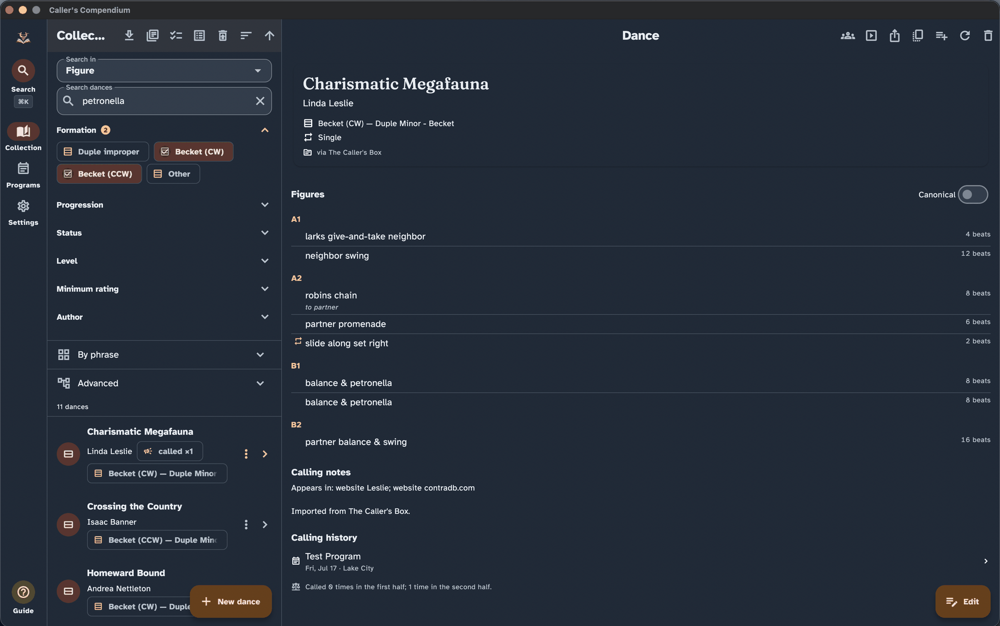
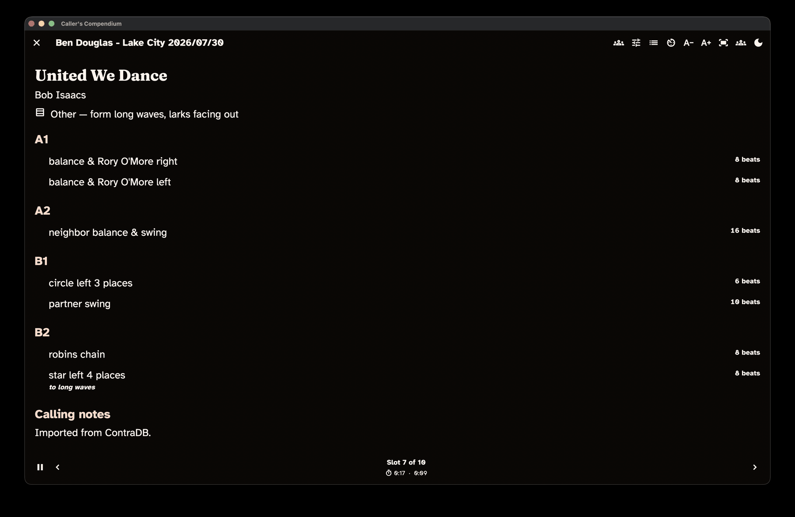

Getting started
New to Caller's Compendium? This guide walks you through what the app is, what you see the first time you open it, and how to find your way around — so you can add your first dance and, when a gig comes around, call from the stage with confidence.
Finding your way around these words. On-screen buttons and screens are written in bold — like Collection and New dance. The first time a dance term appears it links to the Glossary, so you can get a plain-language definition without losing your place.
What Caller's Compendium is
Caller's Compendium is a free, open-source organizer for contra-dance callers. It keeps your collection of dances, helps you build programs (set lists) for events, and gives you a large-print, high-contrast calling view for the stage.
It is local-first, and that shapes everything else:
- Your data stays on your device. Dances, programs, custom fields, and your wording all live in local storage on the machine you are using — not on someone else's server.
- There is no account. Nothing to sign up for, nothing to sign in to. You open the app and start working.
- No telemetry. The app does not track you, phone home, or collect usage data. What you do in Caller's Compendium is your business alone.
- It works offline. You can catalogue dances, build programs, and call a whole evening with no internet connection. The only time the app reaches the network is when you choose to bring in dances from an online source, and even then it only reads — it never publishes your work back out.
- It runs everywhere you call. The same app, adapted to each screen size, runs on Linux, macOS, Windows, Android, and iOS/iPadOS. On a phone you get a single-column layout with a bottom navigation bar; on a tablet or desktop you get side-by-side list and detail panes and a left navigation rail.
Because your whole library lives in one place on your device, you can move it to a new machine any time with a single backup file — see the Backup & portability guide.
Installing the app
Downloadable builds are ready for Linux, macOS, Windows, and Android, and iPhone/iPad builds go out through TestFlight to invited testers. The Installation guide walks you through downloading the right file (or joining the TestFlight beta), getting past the first-time security prompt you'll see on the unsigned Windows and Linux builds, and keeping the app up to date.
Your first launch
When you open Caller's Compendium for the first time, it takes you straight to your Collection. There is no sign-in screen and no setup wizard to get through first.
Your collection starts empty, so you will see a friendly prompt inviting you to add or import a dance to get started, alongside a New dance button. This is your starting point: from here you can build your library by hand, bring in dances you already have, or pull dances from an online source.
The Collection screen with a search query, the Filters panel open, and matching dances visible.

Two small things worth knowing on day one:
- Your wording is already set. Out of the box, the app speaks in Larks/Robins role names. You can change this at any time — see Calling in your own words below.
- Nothing is permanent by accident. If you delete a dance or program, you can undo it, and deleted items can be restored later — so you can explore without worrying about losing work.
A tour of the app
Four destinations are always one step away in the navigation (a bottom bar on a phone, a left rail on a tablet or desktop): Collection, Programs, Settings, and Guide.
Perform is not a destination but a mode — you step into it from a dance or a program when it is time to call, and step back out when you are done.
Guide is this documentation, bundled into the app so you have it on stage with no signal. It is the same set of pages you are reading now.
Collection — your dance library
Collection is your whole library of dances, and it is where the app opens. Each dance is one transcription: its title, author, formation, and the ordered list of figures (the moves) that make it up.
From here you can:
- Browse and sort your dances by title, author, recently added, or last called.
- Search with the bar at the top — type any words and it searches across your dances.
- Filter with the structured panel — narrow by formation, progression, author, tags, custom fields, or even by the figures a dance contains (for example, dances with a petronella, or a chain then a swing).
- Add a dance with New dance, or Import dances from other sources.
Selecting a dance opens its detail view, with the full figure-by-figure breakdown, notes, and links. Learn more in the Collection & search guide.
Programs — set lists for your events
A program is an ordered set list for a single event — Saturday's dance, a weekend, a one-off gig. Open Programs to see the programs you have built; it starts with a short prompt and a New program button until you make your first one.
Inside a program you arrange slots: dance slots pulled from your collection, an alternate dance (an alt) tucked under its primary, and free-text slots for the things between dances — a break, a waltz, announcements. A program also carries its event date, venue, and notes.
The Programs builder with ordered program slots beside a searchable collection picker.

Each program also has a matrix — a figures-by-dances grid worked out from the choreography — so you can see the shape and variety of your evening at a glance and avoid calling three swings-into-a-hey in a row. The Programs & matrix guide covers building programs and reading the matrix in full.
Perform — the calling view
Perform mode is the app's stage-ready calling view. It is not a navigation tab; you enter it when you are ready to call and it fills the whole screen.
- To call a single dance, open it from your collection and choose Perform this dance.
- To call a whole evening, open a program and choose Perform this program, then step through your slots in order.
Perform mode is built for the realities of the stage: huge, adjustable type on a high-contrast dark background, next and previous controls big enough to hit without looking, and the screen kept awake so it never dims mid-dance. If you need to make a change on the fly — reorder what is left, swap in an alt, or add a quick note — an adjust panel lets you do it without disturbing the card you are reading.
Perform mode in the dark-stage theme, with large type and controls for moving through the program.

A full walkthrough — from getting set up before the music starts to making changes mid-gig — is in the Perform mode guide.
Settings — make the app yours
Settings is where you shape the app around how you work. It is organized into sections:
- General — where you run imports and manage your data, including backup and restore.
- Appearance — themes, including light, dark, and high-contrast, plus your own custom themes.
- Dialect — your role names and wording (more on this next).
- Language & region — app language and date formats.
- Defaults — sensible starting values, such as a default caller or band, to save typing.
- Updates — checking for and installing new versions.
- Diagnostics — the local crash log, and how to send it with a bug report.
- About — version, license information, and a link to this guide.
The Settings guide covers each section in detail.
Add your first dance
Ready to put a dance in? From Collection, choose New dance. This opens the dance editor, where you:
- Give the dance a title (this is the only required field), and add the author, formation, calling notes, and — if you like — a step-by-step Walkthrough of how you teach it.
- Build the choreography by adding figures in order. Start typing a move — for example, "sw" — and the editor offers matches like swing; accept it and fill in who does it and for how many beats. A running beat count keeps you honest as you go.
- If a move is unusual and nothing matches, type it in as free text — the editor still records it as a figure in your dance.
- Save when you are happy. Your dance now lives in your collection, ready to search, add to a program, or call.
The editor does much more than this — meanwhile figures, shared author details, undo, and a draft that survives a crash. Write & edit dances covers all of it.
You do not have to build every dance by hand, though — most callers start by bringing in dances they already have.
Bring in dances you already have
If you already keep dances in another tool or have them from a community source, you can Import them instead of retyping. From Collection, choose Import (or run an import from Settings → General).
Caller's Compendium can bring in dances from community sources such as The Caller's Box and ContraDB, and from a Caller's Compendium file that you or another caller exported. You can also turn on online search right from the collection to find and pull in individual dances from The Caller's Box.
Whatever the source, every import lands in a review queue first. You get a side-by-side look at the original and how the app understood it, and nothing touches your collection until you approve it — so an import can never quietly overwrite your work. The Imports & migration guide walks through each source step by step.
Calling in your own words
Contra callers do not all use the same words, and Caller's Compendium does not make you. Your dialect is your personal choice of role names and phrasing, applied everywhere the app shows text.
The app ships speaking Larks/Robins, with Leads/Follows ready to pick, and you can enter any wording you prefer. Underneath, your dances are stored in a shared vocabulary, so switching your dialect never changes the dances themselves — search keeps working and your data stays portable no matter which words you use. You can even switch dialects between gigs, or right from a dance card.
Manage your dialects in Settings → Dialect. For the full picture — presets, editing individual moves, and live previews — see the Dialect guide.
Where to go next
- Fill out your library: Imports & migration · Collection & search
- Build an evening: Programs & matrix
- Call it: Perform mode
- Write your own: Write & edit dances
- Hand it to someone else: Share, print & export
- Make it yours: Dialect · Settings · Backup & portability
- Using assistive technology or large text? The Accessibility guide covers screen readers, text size, high contrast, and keyboard use.
Not sure what a word means? The Glossary has plain definitions for every term used across these guides.